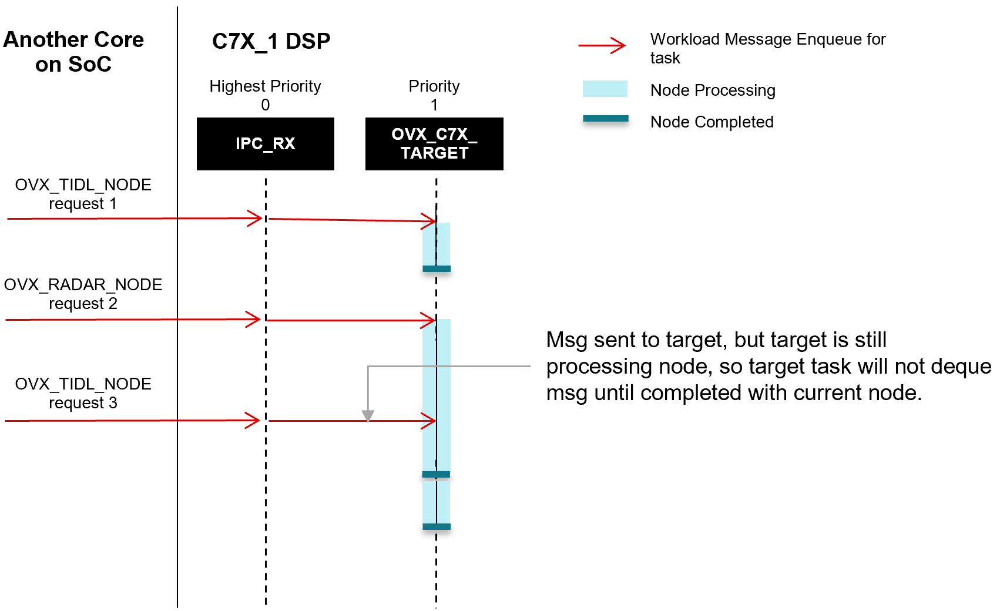
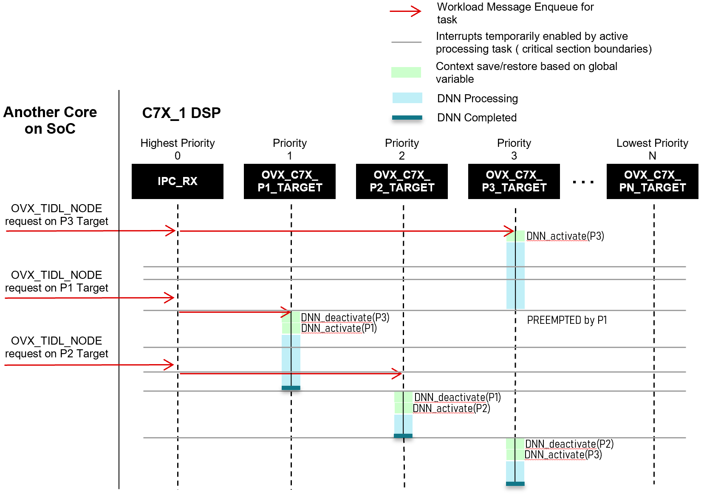

This section gives some insight into the implementation of the TIOVX framework with respect to how multiple workloads are dispatched to and executed on remote cores and targets.
FIFO run to completion per Target
All of the targets execute workloads in FIFO order to completion. Each CPU has a dedicated IPC_RX task which forwards workloads to the appropriate TARGET task/thread to be executed. Please refer to the diagram and description below:

- IPC_RX Task:
- The OpenVX framework creates a IPC_RX task on each Core in the system. This IPC_RX task is run at highest priority, so that any OVX IPC workload request message can be immediately routed to the appropriate OpenVX target.
- OpenVX Targets:
- OpenVX has notion of "Targets", which are essentially named processing threads/tasks on a core. For more details, see Explanation of Targets in TIOVX
- Each target will process requests to completion in FIFO order. A core can have N number of targets.
- There are two reasons to have multiple targets on a core:
- If a core is managing multiple compute resources or HWAs, then a separate target can be created for each resource (e.g. VPAC VISS target, VPAC LDC target, etc). This architecture ensures proper resource management across requesters.
- If the application wants priority-based access to a resource, then different targets can be used at different task priorities.
Priority-Based Preemption of C7X Targets
In order to support the situation where multiple TIDL networks are needed to be run at different rates with different priorities, TIOVX supports multiple priority-based TARGETS on the C7X DSP(s). Additionally, TIDL has been instrumented to lock and unlock interrupts such that priority preemption can happen at well-defined points in the network processing to provide optimal context save/restore points and avoid otherwise costly preemption of the highly pipelined hardware. Please refer to the diagram and description below:

- Assumption
- RTOS supports and is configured to have tasks running at different priorities
- OpenVX Targets
- The application can assign each OVX DNN node to a specific target at initialization time.
- To support multiple priorities of DNN execution with preemption, we just create multiple OVX targets on the DSP with different task priorities so that the OS can preempt and manage the priority scheme for us.
- User just has to assign nodes to targets based on priority
- Critical Sections
- Since we need to control when the DNNs can be preempted, the DNN execution will call critical section callbacks provided by the OpenVX DNN node wrapper, disabling/reenabling interrupts to prevent the OS from preemption at wrong time.
- Deactivate/Activate
- Global variables are used to keep track of ACTIVE DNN handle, so that each DNN task, upon entering its critical section, checks if the CURRENT handle matches the ACTIVE handle. If not, it first deactivates ACTIVE handle and activates the CURRENT handle, and then updates the ACTIVE handle variable.
 1.8.14
1.8.14